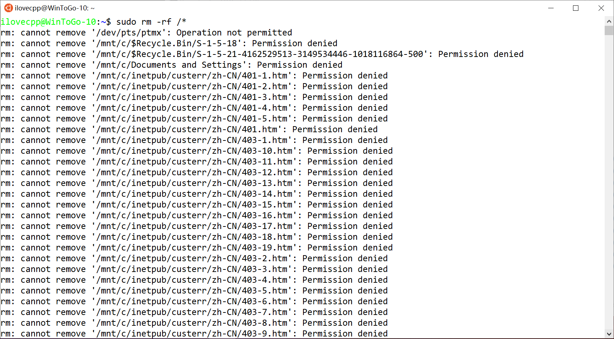

昨天真是难受，今天还是难受
Both Today and Yesterday Are Troubles
2020/4/16 11：04 分类：分类
害！
真是不知道说什么好了！
首先呢就是一个憨批刘某举报了PanDownload，说隐私泄露。首先谁会把隐私放网盘上啊，而且外部资源搜索用的是一个名叫史莱姆的API(好像是)，而且好像只搜索分享链接，所以这和PD没什么大关系吧。
现在没了PD，虽然说不用也不是不行，只是，百度网盘官方的下载只有500K/s(超级会)，PD能跑10M。
特么的宝应网警也是憨批，大大的免费看不到？
那30W是赞助和入群费，人家自愿的,懂？
啊，另一件麻烦事是我脑子一抽，在Linux Subsystem来了一手rm -rf /*，又得重服务器回档。

啊，还有一个是现在才发现我之前写的静态页面都没有<html lang="zh">,真是日了个poi的，虽然不写问题也不大，就是要是外国人来访问(在想🍑)译不了就很尴尬（加了个禁止选择和右键，连控制台都得单独一个页面打开），顺手今天就加上了。